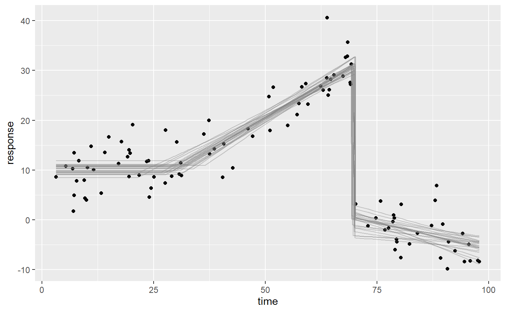
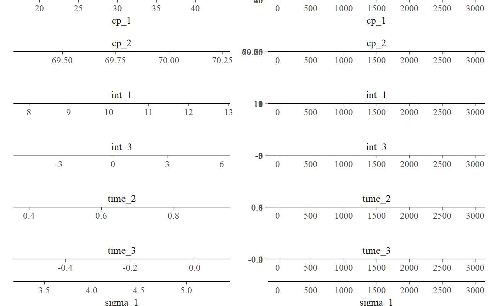

Given a list of linear segments, mcp infers the posterior
distributions of the parameters of each segment as well as the change points
between segments. See more details and worked examples on the mcp website.
All segments must regress on the same x-variable. Change
points are forced to be ordered using truncation of the priors. You can run
fit = mcp(segments, sample=FALSE) to avoid sampling and the need for
data if you just want to get the priors (fit$prior), the JAGS code
fit$jags_code, or the R function to simulate data (fit$simulate).
mcp( segments, data = NULL, prior = list(), family = gaussian(), par_x = NULL, sample = "post", cores = 1, chains = 3, iter = 3000, adapt = 1000, inits = NULL, jags_code = NULL )
Arguments
| segments | A list of formulas - one for each segment. The first formula
has the format
|
|---|---|
| data | Data.frame or tibble in long format. |
| prior | Named list. Names are parameter names (
|
| family | One of |
| par_x | String (default: NULL). Only relevant if no segments contains slope (no hint at what x is). Set this, e.g., par_x = "time". |
| sample | One of
|
| cores | Positive integer or "all". Number of cores.
|
| chains | Positive integer. Number of chains to run. |
| iter | Positive integer. Number of post-warmup samples to draw. |
| adapt | Positive integer. Also sometimes called "burnin", this is the number of samples used to reach convergence. Set lower for greater speed. Set higher if the chains haven't converged yet or look at tips, tricks, and debugging. |
| inits | A list if initial values for the parameters. This can be useful
if a model fails to converge. Read more in |
| jags_code | Pass JAGS code to |
Value
An mcpfit object.
Details
Notes on priors:
Order restriction is automatically applied to cp_\* parameters using truncation (e.g.,
T(cp_1, )) so that they are in the correct order on the x-axis UNLESS you do it yourself. The one exception is for dunif distributions where you have to do it as above.In addition to the model parameters,
MINX(minimum x-value),MAXX(maximum x-value),SDX(etc...),MINY,MAXY, andSDYare also available when you set priors. They are used to set uninformative default priors.Use SD when you specify priors for dt, dlogis, etc. JAGS uses precision but
mcpconverts to precision under the hood via the sd_to_prec() function. So you will see SDs infit$priorbut precision ($1/SD^2) infit$jags_code
See also
Examples
# \donttest{ # Define the segments using formulas. A change point is estimated between each formula. segments = list( response ~ 1, # Plateau in the first segment (int_1) ~ 0 + time, # Joined slope (time_2) at cp_1 ~ 1 + time # Disjoined slope (int_3, time_3) at cp_2 ) # Fit it. The `ex_demo` dataset is included in mcp. Sample the prior too. # options(mc.cores = 3) # Uncomment to speed up sampling ex_fit = mcp(segments, data = ex_demo, sample = "both")#> Compiling model graph #> Resolving undeclared variables #> Allocating nodes #> Graph information: #> Observed stochastic nodes: 100 #> Unobserved stochastic nodes: 7 #> Total graph size: 1730 #> #> Initializing model #>#>#> Compiling model graph #> Resolving undeclared variables #> Allocating nodes #> Graph information: #> Observed stochastic nodes: 0 #> Unobserved stochastic nodes: 107 #> Total graph size: 1730 #> #> Initializing model #>#>#> Family: gaussian(link = 'identity') #> Iterations: 9000 from 3 chains. #> Segments: #> 1: response ~ 1 #> 2: response ~ 1 ~ 0 + time #> 3: response ~ 1 ~ 1 + time #> #> Population-level parameters: #> name match sim mean lower upper Rhat n.eff ts_se #> cp_1 OK 30.0 30.72 22.85 38.051 1 371 366.487 #> cp_2 OK 70.0 69.77 69.27 70.232 1 5918 0.129 #> int_1 OK 10.0 10.32 8.92 11.724 1 1630 2.621 #> int_3 OK 0.0 0.50 -2.40 3.637 1 747 28.905 #> sigma_1 OK 4.0 4.01 3.45 4.621 1 4373 0.184 #> time_2 OK 0.5 0.54 0.41 0.673 1 381 0.117 #> time_3 OK -0.2 -0.22 -0.40 -0.045 1 762 0.098plot_pars(ex_fit)#> hypothesis mean lower upper p BF #> 1 cp_1 - 10 > 0 20.71633 12.8479 28.0509 1 Inf# \donttest{ # Compare to a one-intercept-only model (no change points) with default prior segments_null = list(response ~ 1) fit_null = mcp(segments_null, data = ex_demo, par_x = "time") # fit another model here#> Compiling model graph #> Resolving undeclared variables #> Allocating nodes #> Graph information: #> Observed stochastic nodes: 100 #> Unobserved stochastic nodes: 2 #> Total graph size: 518 #> #> Initializing model #>#>#> Warning: Some Pareto k diagnostic values are slightly high. See help('pareto-k-diagnostic') for details.#> elpd_diff se_diff #> model1 0.0 0.0 #> model2 -108.0 8.8#> Family: gaussian(link = 'identity') #> Iterations: 9000 from 3 chains. #> Segments: #> 1: response ~ 1 #> 2: response ~ 1 ~ 0 + time #> 3: response ~ 1 ~ 1 + time #> #> Population-level parameters: #> name match sim mean lower upper Rhat n.eff ts_se #> cp_1 OK 30.0 37.4995 3.2e+00 85.94 1 9000 6.2e+02 #> cp_2 OK 70.0 60.8963 2.0e+01 97.96 1 9000 5.6e+02 #> int_1 OK 10.0 -0.8966 -1.2e+02 117.88 1 9000 4.3e+03 #> int_3 OK 0.0 0.2968 -1.2e+02 112.56 1 9000 3.7e+03 #> sigma_1 OK 4.0 9.5164 5.4e-03 23.41 1 9000 5.3e+01 #> time_2 0.5 -0.0021 -3.9e-01 0.42 1 9000 4.3e-02 #> time_3 OK -0.2 -0.0013 -3.8e-01 0.43 1 9000 4.7e-02#> $cp_1 #> [1] "dt(MINX, (MAXX - MINX) / N_CP, 1) T(cp_0, MAXX)" #> #> $cp_2 #> [1] "dt(MINX, (MAXX - MINX) / N_CP, 1) T(cp_1, MAXX)" #> #> $int_1 #> [1] "dt(0, 3 * SDY, 3)" #> #> $int_3 #> [1] "dt(0, 3 * SDY, 3)" #> #> $time_2 #> [1] "dt(0, SDY / (MAXX - MINX), 3)" #> #> $time_3 #> [1] "dt(0, SDY / (MAXX - MINX), 3)" #> #> $sigma_1 #> [1] "dnorm(0, SDY) T(0, )" #> #> attr(,"class") #> [1] "mcpprior"# Set priors and re-run prior = list( int_1 = 15, time_2 = "dt(0, 2, 1) T(0, )", # t-dist slope. Truncated to positive. cp_2 = "dunif(cp_1, 80)", # change point to segment 2 > cp_1 and < 80. int_3 = "int_1" # Shared intercept between segment 1 and 3 ) # \donttest{ fit3 = mcp(segments, data = ex_demo, prior = prior)#> Compiling model graph #> Resolving undeclared variables #> Allocating nodes #> Graph information: #> Observed stochastic nodes: 100 #> Unobserved stochastic nodes: 5 #> Total graph size: 1729 #> #> Initializing model #>#>#> #> model { #> #> # Priors for population-level effects #> cp_0 = MINX # mcp helper value. #> cp_3 = MAXX # mcp helper value. #> #> cp_1 ~ dt(MINX, 1/((MAXX-MINX)/N_CP)^2, 1) T(cp_0, MAXX) #> cp_2 ~ dt(MINX, 1/((MAXX-MINX)/N_CP)^2, 1) T(cp_1, MAXX) #> int_1 ~ dt(0, 1/(3*SDY)^2, 3) #> int_3 ~ dt(0, 1/(3*SDY)^2, 3) #> time_2 ~ dt(0, 1/(SDY/(MAXX-MINX))^2, 3) #> time_3 ~ dt(0, 1/(SDY/(MAXX-MINX))^2, 3) #> sigma_1 ~ dnorm(0, 1/(SDY)^2) T(0, ) #> #> #> # Model and likelihood #> for (i_ in 1:length(time)) { #> X_1_[i_] = min(time[i_], cp_1) #> X_2_[i_] = min(time[i_], cp_2) - cp_1 #> X_3_[i_] = min(time[i_], cp_3) - cp_2 #> #> # Fitted value #> y_[i_] = #> #> # Segment 1: response ~ 1 #> (time[i_] >= cp_0) * (time[i_] < cp_2) * int_1 + #> #> # Segment 2: response ~ 1 ~ 0 + time #> (time[i_] >= cp_1) * (time[i_] < cp_2) * time_2 * X_2_[i_] + #> #> # Segment 3: response ~ 1 ~ 1 + time #> (time[i_] >= cp_2) * int_3 + #> (time[i_] >= cp_2) * time_3 * X_3_[i_] #> #> # Fitted standard deviation #> sigma_[i_] = #> (time[i_] >= cp_0) * sigma_1 #> #> # Likelihood and log-density for family = gaussian() #> response[i_] ~ dnorm((y_[i_]), 1 / sigma_[i_]^2) #> loglik_[i_] = logdensity.norm(response[i_], (y_[i_]), 1 / sigma_[i_]^2) #> } #> }